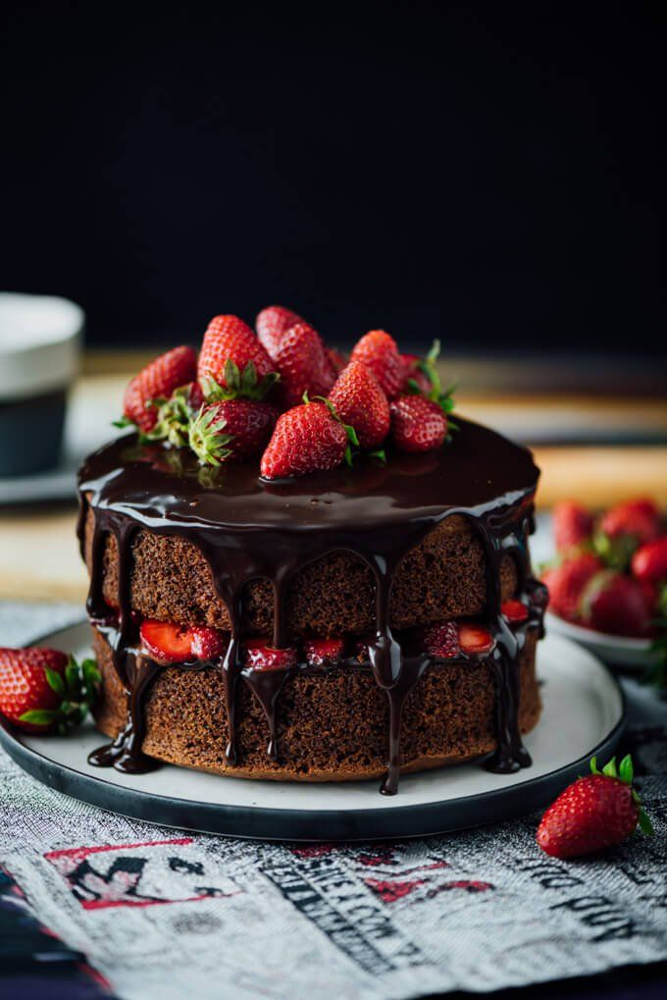

About Tirta Cake
Tirta Cake berawal dari 6 April 2019, dimana saya Septya masih bekerja pada salah satu coffee shop. Kebetulan owner shop itu jual cake homemade, dari sana lah saya mulai bantu bantu bos saya, dan saya jadi tau bagaimana, apa saja bahan bahan dan alatnya. Akhirnya saya mencoba membuka usaha cake rumahan dengan bahan yang mirip. Dengan jangkauan pemasaran yang masih dari mulut ke mulut, dari saudara ke teman, dan akhirnya sampai sekarang.